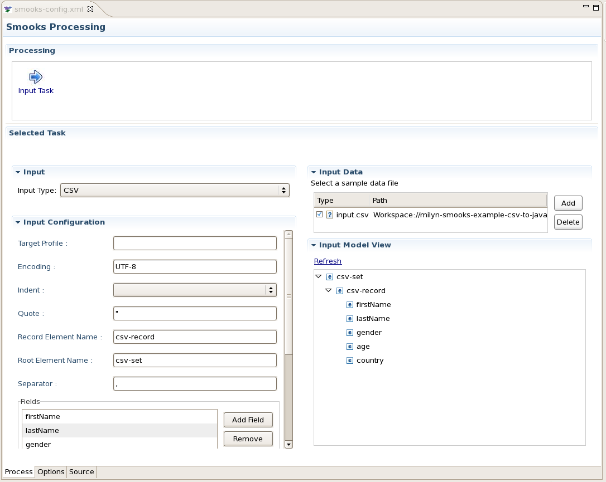
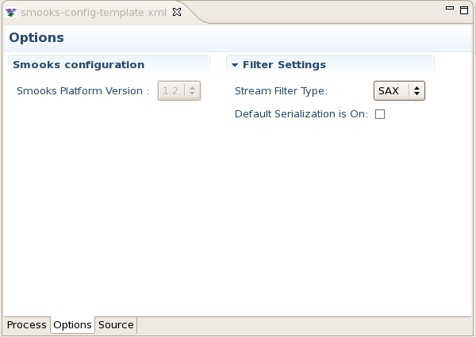
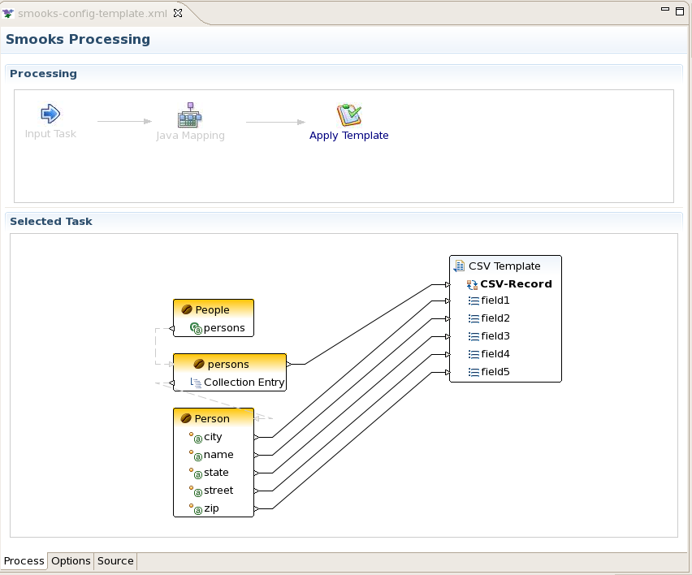
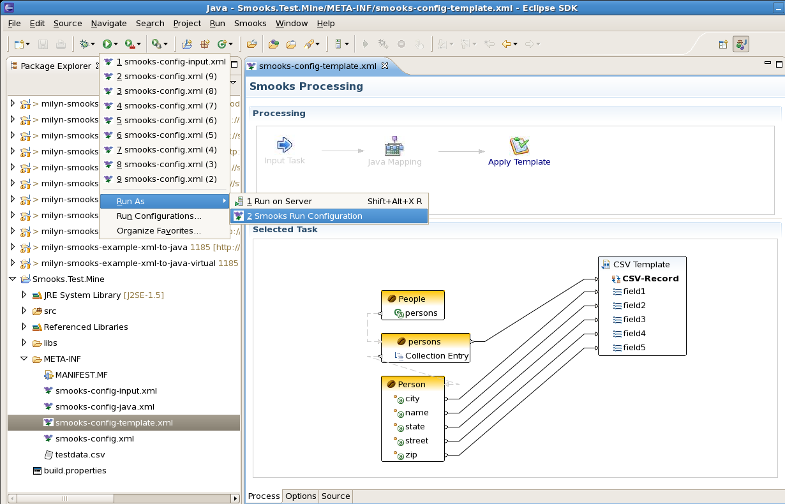
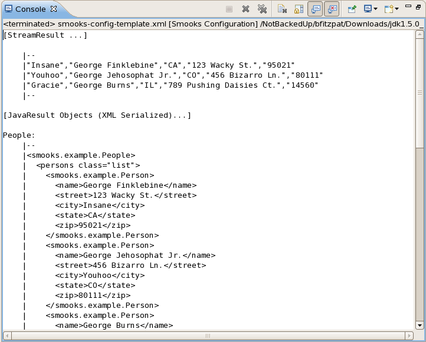

Smooks Configuration Editor |
|
| Multiple Page Editor |
Input tab has been moved into the Process page. To access the Input configuration, select the "Input Task" in the Processing Tasks pane. The functionality for the Input Task embedded on the Process page is the same as the "Input" page in M4, which in turn inherited many functions from the 'Reader' page. |
| New Options Page |
A new page has been added to handle a couple of options. The Options page displays the Smooks Platform version for your configuration as well as a couple of filter settings:
For more details about these settings, see the Smooks User Guide online.  |
| Apply Templates |
You now have the ability to apply a FreeMarker template after a Java Mapping task. In CR1, we only have CSV templates working, but there will be more template types in the future. When you add the Apply Template task to the tasks pane, a wizard pops up prompting you to select a template type. Once you've selected it, you can provide details (such as a comma-separated list of fields). When you hit Finish, the template model is added to the canvas and you can drag and drop to create links from the Java Mapping model to the template model. Below is an example of mapping a set of Java classes to a CSV template.  |
Smooks Launch |
|
| Smooks Run Configuration |
In addition to being able to create Smooks Configuration files more easily using drag and drop, you now have the ability to test your Smooks configurations from within the Eclipse runtime using Smooks Run Configurations. To create a Smooks Run Configuration, select a Smooks configuration file in the navigator or open one in the Smooks Configuration Editor. Click on the drop-down menu for the Run button in the toolbar, select Run As-> Smooks Run Configuration. Your new Smooks Run Configuration will test the Smooks configuration and display any results in the Console. If any errors occur, an error dialog will appear with specifics.  |
|
|
|